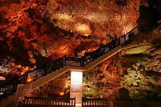
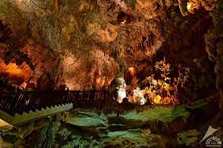

yaklaşık 15.000 yıl önce tavanından akan yağmur suları ile oluşmuştur. Ayrıca mağaranın değişmeyen sıcaklığı ile eriyen damlalar, mağaraya akan sular ile eriyen damlalar, dikitlerin oluşmasını sağlamıştır.
Damlataş Mağarasına özel araç ve turizm şirketleri araçlarıyla gidebilirsiniz. Bunun dışında Alanya merkezden yürüyerek veya şehir içi araçları kullanarak ulaşım sağlayabilirsiniz.
Çarşı, Damlataş Cd. No:81, Alanya/Antalya
 